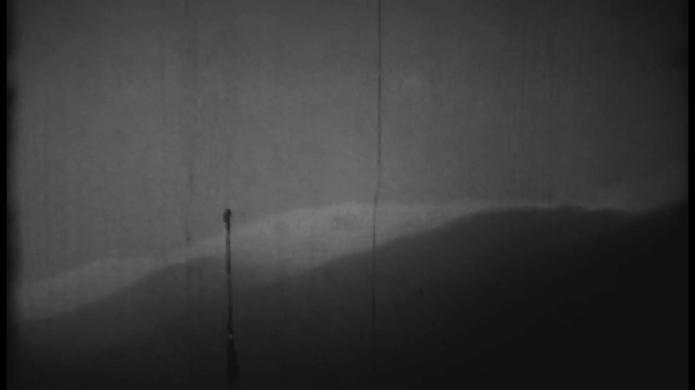
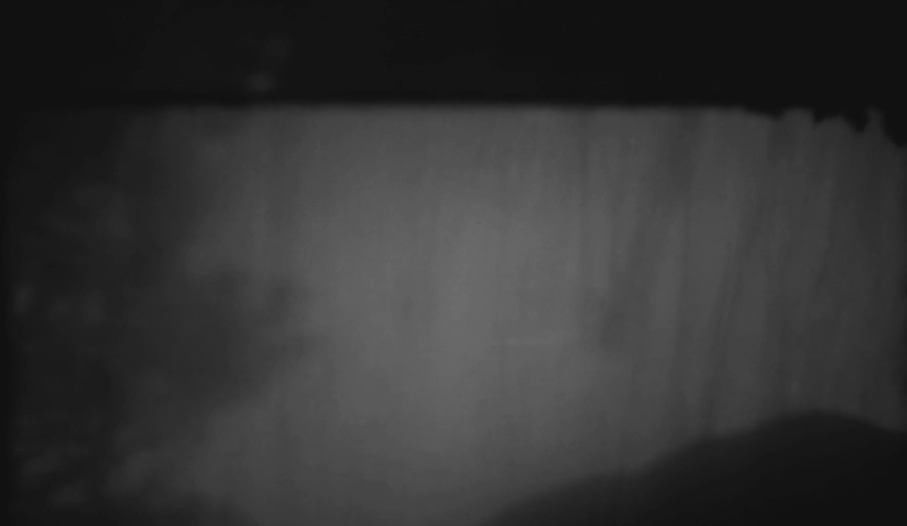
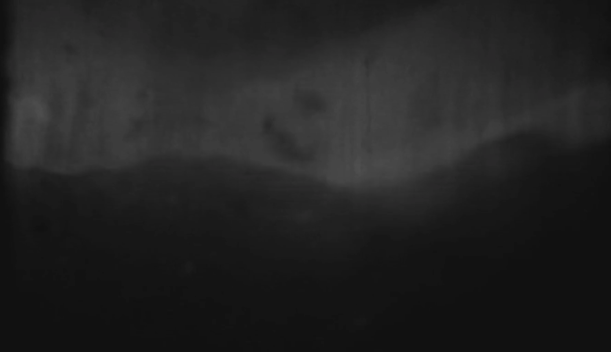

Christopher T.
Pan Loop Tararua Ranges 2021
? →



2021. 10m53s
A pan across the peaks of Aotearoa's Tararua Ranges is spliced and looped through a 8mm projector. The frames are cut, torn and burnt. The score is composed live.